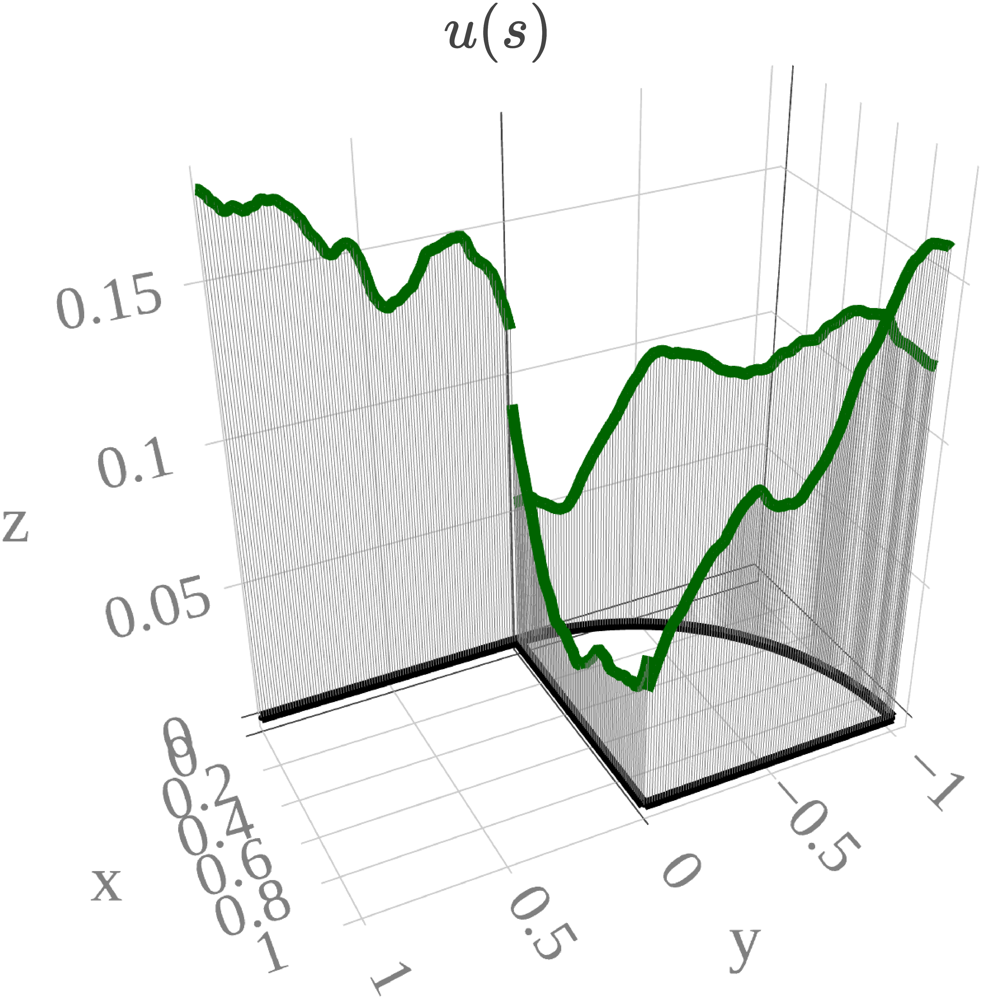

Go back to the Contents page.
Press Show to reveal the code chunks.
Below we set some global options for all code chunks in this
document.
# Create a clipboard button on the rendered HTML page
source(here::here("clipboard.R")); clipboard
# Set seed for reproducibility
set.seed(1984)
# Set global options for all code chunks
knitr::opts_chunk$set(
# Disable messages printed by R code chunks
message = FALSE,
# Disable warnings printed by R code chunks
warning = FALSE,
# Show R code within code chunks in output
echo = TRUE,
# Include both R code and its results in output
include = TRUE,
# Evaluate R code chunks
eval = FALSE,
# Enable caching of R code chunks for faster rendering
cache = FALSE,
# Align figures in the center of the output
fig.align = "center",
# Enable retina display for high-resolution figures
retina = 2,
# Show errors in the output instead of stopping rendering
error = TRUE,
# Do not collapse code and output into a single block
collapse = FALSE
)
# Start the figure counter
fig_count <- 0
# Define the captioner function
captioner <- function(caption) {
fig_count <<- fig_count + 1
paste0("Figure ", fig_count, ": ", caption)
}
# Define the function to truncate a number to two decimal places
truncate_to_two <- function(x) {
truncated <- floor(x * 100) / 100
sprintf("%.2f", truncated)
}
Below we load the necessary libraries and define the auxiliary
functions.
library(rSPDE)
library(MetricGraph)
library(dplyr)
library(plotly)
library(scales)
library(patchwork)
library(tidyr)
library(here)
library(rmarkdown)
# Cite all loaded packages
library(grateful)
library(slackr)
source("keys.R")
slackr_setup(token = token) # token comes from keys.R
## [1] "Successfully connected to Slack"
capture.output(
knitr::purl(here::here("functionality1.Rmd"), output = here::here("functionality1.R")),
file = here::here("old/purl_log.txt")
)
source(here::here("functionality1.R"))
reticulate::use_python(
"/home/rierasl/miniconda3/envs/phdenv/bin/python",
required = TRUE
)
reticulate::py_config()
gets_f_in_dist_mesh <- function(graph, f_values){
VtE <- graph$mesh$VtE
E <- graph$E
nE <- graph$nE
nV <- graph$nV
E_ext <- data.frame(edge_number = 1:nE, vertex_start = E[,1], vertex_end = E[,2])
original_vertex <- VtE[1:nV,]
f <- f_values[1:nV]
no_vertices <- cbind(VtE[(nV+1):length(f_values),], f_values[(nV+1):length(f_values)])
same_vertex_list <- list()
for (i in 1:nE) {
same_vertex_list[[i]] <- E_ext %>%
filter(vertex_start == i | vertex_end == i) %>%
mutate(lor = case_when(vertex_start == i ~ 0,vertex_end == i ~ 1)) %>%
dplyr::select(edge_number, lor) %>%
as.matrix()
}
for (i in seq_len(nrow(original_vertex))) {
current_row <- original_vertex[i, ]
# Find which matrix in same_vertex_list contains this row
for (j in seq_along(same_vertex_list)) {
if (any(apply(same_vertex_list[[j]], 1, function(x) all(x == current_row)))) {
# Add a new column with the corresponding value from f
same_vertex_list[[j]] <- cbind(same_vertex_list[[j]], f[i])
break
}
}
}
result_matrix <- do.call(rbind, same_vertex_list)
return(rbind(no_vertices, result_matrix))
}
Let’s build a small graph to illustrate the effect of \(\tau\) on the graph.
edge1 <- rbind(c(0,0),c(1,0))
edge2 <- rbind(c(0,0),c(0,1))
edge3 <- rbind(c(0,1),c(-1,1))
theta <- seq(from = pi,to = 3*pi/2,length.out = 50)
edge4 <- cbind(sin(theta),1+ cos(theta))
edges <- list(edge1, edge2, edge3, edge4)
h = 0.01
graph <- metric_graph$new(edges = edges)
aux_graph <- graph$clone()
graph$build_mesh(h=h, continuous = TRUE)
edge_number <- graph$mesh$VtE
XY_graph <- graph$mesh$V
aux_graph$build_mesh(h=h, continuous = FALSE)
aux_edge_number <- aux_graph$mesh$VtE
aux_XY_graph <- aux_graph$mesh$V
Let \(f(s) =
\mathrm{edge.number}(s)/4\) and \(g(s)
= 0.5 \cdot (x^2(s) - y^2(s)) + 0.5\), where \((x(s), y(s))\) denote the Euclidean
coordinates on the plane (see Figures 1 and 2). Clearly, \(f\) is continuous, whereas \(g\) is discontinuous. These functions serve
as covariates in the analysis.
f <- edge_number[,1]/4 # discontinuous covariate
g <- 0.5*(XY_graph[, 1]^2 - XY_graph[, 2]^2) + 0.5 # continuous covariate
aux_f <- aux_edge_number[,1]/4# discontinuous covariate
aux_g <- 0.5*(aux_XY_graph[, 1]^2 - aux_XY_graph[, 2]^2) + 0.5 # continuous covariate
Plot the
covariates.
cov_f <- aux_graph$plot_function(aux_f, vertex_size = 1, type = "plotly", line_color = "#0000C8", line_width = gsw, continuous = FALSE, interpolate_plot = FALSE, edge_width = gsw) %>%
config(mathjax = 'cdn') %>%
layout(title = list(text = TeX("f(s) = \\mathrm{edge.number}(s)/4"), y = 0.78, size = 20),
font = list(family = "Palatino"),
showlegend = FALSE,
scene = list(xaxis = list(title = list(text = "x", font = list(color = "gray", size = 20)), tickfont = list(color = "gray", size = 15)),
yaxis = list(title = list(text = "y", font = list(color = "gray", size = 20)), tickfont = list(color = "gray", size = 15)),
zaxis = list(title = list(text = "z", font = list(color = "gray", size = 20)), tickfont = list(color = "gray", size = 15)),
aspectratio = list(x = 1/2, y = 1, z = 1),
camera = list(
eye = list(x = -1*a, y = 0.5*a, z = 0.7*a))))
cov_g <- graph$plot_function(g, vertex_size = 1, type = "plotly", line_color = "red", line_width = gsw, edge_width = gsw) %>%
config(mathjax = 'cdn') %>%
layout(title = list(text = TeX("g(s) = 0.5 \\cdot (x^2(s) - y^2(s)) + 0.5"), y = 0.78, size = 20),
font = list(family = "Palatino"),
showlegend = FALSE,
scene = list(xaxis = list(title = list(text = "x", font = list(color = "gray", size = 20)), tickfont = list(color = "gray", size = 15)),
yaxis = list(title = list(text = "y", font = list(color = "gray", size = 20)), tickfont = list(color = "gray", size = 15)),
zaxis = list(title = list(text = "z", font = list(color = "gray", size = 20)), tickfont = list(color = "gray", size = 15)),
aspectratio = list(x = 1/2, y = 1, z = 1),
camera = list(
eye = list(x = -1*a, y = 0.5*a, z = 0.7*a))))
save(cov_f, file = here::here("data_files/cov_f.Rdata"))
save(cov_g, file = here::here("data_files/cov_g.Rdata"))
save_plotly_figure_fixed(cov_f, dpi = 600, scale = 2, viewer_change = 1)
save_plotly_figure_fixed(cov_g, dpi = 600, scale = 2, viewer_change = 1)
knitr::include_graphics(here::here("data_files/plotlypdf/cov_f.png"))
knitr::include_graphics(here::here("data_files/plotlypdf/cov_g.png"))
normal_sample <- rnorm(length(g))
Both covariates are
continuous
We now consider the case where both covariates are continuous, that
is \(\tau(s) = \exp(g(s))\) and \(\kappa(s) = \exp(g(s))\). Using these, we
simulate \(u(s)\). See Figures 3,4, and
5.
# Define the matrices B.tau and B.kappa
B.tau = cbind(0, 1, 0, g, 0)
B.kappa = cbind(0, 0, 1, 0, g)
# Log-regression coefficients
theta <- c(0, 0, 1, 1)
# Choose alpha
nu = 1.5
alpha = nu + 1/2
# Compute the operator
op <- rSPDE::spde.matern.operators(graph = graph,
B.tau = B.tau,
B.kappa = B.kappa,
parameterization = "spde",
theta = theta,
alpha = alpha)
# Simulate the non-stationary field
Sigma <- precision(op)
R <- chol(Sigma)
u = solve(R, normal_sample)
model_for_tau <- exp(B.tau[,-1]%*%theta)
model_for_kappa <- exp(B.kappa[,-1]%*%theta)
kkk1 <- graph$plot_function(model_for_tau, vertex_size = 1, type = "plotly", line_color = "#0000C8", line_width = gsw, edge_width = gsw) %>%
config(mathjax = 'cdn') %>%
layout(title = list(text = TeX("\\tau(s) = \\exp(g(s))"), y = 0.78, size = 20),
font = list(family = "Palatino"),
showlegend = FALSE,
scene = list(xaxis = list(title = list(text = "x", font = list(color = "gray", size = 20)), tickfont = list(color = "gray", size = 15)),
yaxis = list(title = list(text = "y", font = list(color = "gray", size = 20)), tickfont = list(color = "gray", size = 15)),
zaxis = list(title = list(text = "z", font = list(color = "gray", size = 20)), tickfont = list(color = "gray", size = 15)),
aspectratio = list(x = 1/2, y = 1, z = 1),
camera = list(
eye = list(x = -1*a, y = 0.5*a, z = 0.7*a))))
kkk2 <- graph$plot_function(model_for_kappa, vertex_size = 1, type = "plotly", line_color = "red", line_width = gsw, edge_width = gsw) %>%
config(mathjax = 'cdn') %>%
layout(title = list(text = TeX("\\kappa(s) = \\exp(g(s))"), y = 0.78, size = 20),
font = list(family = "Palatino"),
showlegend = FALSE,
scene = list(xaxis = list(title = list(text = "x", font = list(color = "gray", size = 20)), tickfont = list(color = "gray", size = 15)),
yaxis = list(title = list(text = "y", font = list(color = "gray", size = 20)), tickfont = list(color = "gray", size = 15)),
zaxis = list(title = list(text = "z", font = list(color = "gray", size = 20)), tickfont = list(color = "gray", size = 15)),
aspectratio = list(x = 1/2, y = 1, z = 1),
camera = list(
eye = list(x = -1*a, y = 0.5*a, z = 0.7*a))))
kkk3 <- graph$plot_function(X = u, vertex_size = 1, type = "plotly", line_color = "darkgreen", line_width = gsw, edge_width = gsw) %>%
config(mathjax = 'cdn') %>%
layout(title = list(text = TeX("u(s)"), y = 0.78, size = 20),
font = list(family = "Palatino"),
showlegend = FALSE,
scene = list(xaxis = list(title = list(text = "x", font = list(color = "gray", size = 20)), tickfont = list(color = "gray", size = 15)),
yaxis = list(title = list(text = "y", font = list(color = "gray", size = 20)), tickfont = list(color = "gray", size = 15)),
zaxis = list(title = list(text = "z", font = list(color = "gray", size = 20)), tickfont = list(color = "gray", size = 15)),
aspectratio = list(x = 1/2, y = 1, z = 1),
camera = list(
eye = list(x = -1*a, y = 0.5*a, z = 0.7*a))))
save(kkk1, file = here::here("data_files/kkk1.Rdata"))
save(kkk2, file = here::here("data_files/kkk2.Rdata"))
save(kkk3, file = here::here("data_files/kkk3.Rdata"))
save_plotly_figure_fixed(kkk1, dpi = 600, scale = 2, viewer_change = 1)
save_plotly_figure_fixed(kkk2, dpi = 600, scale = 2, viewer_change = 1)
save_plotly_figure_fixed(kkk3, dpi = 600, scale = 2, viewer_change = 1)
knitr::include_graphics(here::here("data_files/plotlypdf/kkk1.png"))
knitr::include_graphics(here::here("data_files/plotlypdf/kkk2.png"))
knitr::include_graphics(here::here("data_files/plotlypdf/kkk3.png"))
Both covariates are
discontinuos
We now consider the case where both covariates are discontinuous,
that is \(\tau(s) = \exp(f(s))\) and
\(\kappa(s) = \exp(f(s))\). Using
these, we simulate \(u(s)\). See
Figures 6,7, and 8.
tau <- 1
# Define the matrices B.tau and B.kappa
B.tau <- cbind(0, 1, 0, log(tau)*rep(1, length(f)), 0)
realB.tau <- cbind(0, 1, 0, f, 0)
B.kappa = cbind(0, 0, 1, 0, f)
# Log-regression coefficients
theta <- c(0, 0, 1, 1)
# Compute the operator
op1 <- rSPDE::spde.matern.operators(graph = graph,
B.tau = B.tau,
B.kappa = B.kappa,
parameterization = "spde",
theta = theta,
alpha = alpha)
realmodel_for_tau <- exp(realB.tau[,-1]%*%theta)
normal_sample1 <- normal_sample #rnorm(length(g))
Sigma1 <- precision(op1)
R1 <- chol(Sigma1)
u1cont <- solve(R1, normal_sample1)
u1 <-u1cont*tau/realmodel_for_tau
op2 <- rSPDE::spde.matern.operators(graph = graph,
B.tau = realB.tau,
B.kappa = B.kappa,
parameterization = "spde",
theta = theta,
alpha = alpha)
Sigma2 <- precision(op2)
R2 <- chol(Sigma2)
u2 = solve(R2, normal_sample1)
# To plot the models for tau and kappa
aux_B.tau = cbind(0, 1, 0, aux_f, 0)
aux_B.kappa = cbind(0, 0, 1, 0, aux_f)
model_for_tau <- exp(aux_B.tau[,-1]%*%theta)
model_for_kappa <- exp(aux_B.kappa[,-1]%*%theta)
gg <- gets_f_in_dist_mesh(graph, u1cont)
aux_df <- data.frame(.edge_number = gg[,1], .distance_on_edge = gg[,2], f = gg[,3])
another_df <- cbind(tau/model_for_tau, aux_graph$mesh$VtE)
colnames(another_df) <- c("tau_rel", ".edge_number", ".distance_on_edge")
another_df <- as.data.frame(another_df)
# Step 1: Sort aux_df by the four columns
aux_df_sorted <- aux_df %>%
arrange(.edge_number, .distance_on_edge)
another_df_sorted <- another_df %>%
arrange(.edge_number, .distance_on_edge)
# Merge
merged_df <- cbind(aux_df_sorted, another_df_sorted)[c(1:4)] %>% mutate(final_f = f*tau_rel) %>% dplyr::select(-tau_rel, -f) %>% rename(edge_number = .edge_number, distance_on_edge = .distance_on_edge, f = final_f)
prod <- aux_graph$process_data(data = merged_df, normalized = TRUE)
kkk4 <- aux_graph$plot_function(model_for_tau, vertex_size = 1, type = "plotly", line_color = "#0000C8", line_width = gsw, edge_width = gsw) %>%
config(mathjax = 'cdn') %>%
layout(title = list(text = TeX("\\tau(s) = \\exp(f(s))"), y = 0.78, size = 20),
font = list(family = "Palatino"),
showlegend = FALSE,
scene = list(xaxis = list(title = list(text = "x", font = list(color = "gray", size = 20)), tickfont = list(color = "gray", size = 15)),
yaxis = list(title = list(text = "y", font = list(color = "gray", size = 20)), tickfont = list(color = "gray", size = 15)),
zaxis = list(title = list(text = "z", font = list(color = "gray", size = 20)), tickfont = list(color = "gray", size = 15)),
aspectratio = list(x = 1/2, y = 1, z = 1),
camera = list(
eye = list(x = -1*a, y = 0.5*a, z = 0.7*a))))
kkk5 <- aux_graph$plot_function(model_for_kappa, vertex_size = 1, type = "plotly", line_color = "red", line_width = gsw, edge_width = gsw) %>%
config(mathjax = 'cdn') %>%
layout(title = list(text = TeX("\\kappa(s) = \\exp(f(s))"), y = 0.78, size = 20),
font = list(family = "Palatino"),
showlegend = FALSE,
scene = list(xaxis = list(title = list(text = "x", font = list(color = "gray", size = 20)), tickfont = list(color = "gray", size = 15)),
yaxis = list(title = list(text = "y", font = list(color = "gray", size = 20)), tickfont = list(color = "gray", size = 15)),
zaxis = list(title = list(text = "z", font = list(color = "gray", size = 20)), tickfont = list(color = "gray", size = 15)),
aspectratio = list(x = 1/2, y = 1, z = 1),
camera = list(
eye = list(x = -1*a, y = 0.5*a, z = 0.7*a))))
kkk6 <- aux_graph$plot_function(data = "f", newdata= prod, vertex_size = 1, type = "plotly", line_color = "darkgreen", line_width = gsw, continuous = FALSE, edge_width = gsw) %>%
config(mathjax = 'cdn') %>%
layout(title = list(text = TeX("u(s)"), y = 0.78, size = 20),
font = list(family = "Palatino"),
showlegend = FALSE,
scene = list(xaxis = list(title = list(text = "x", font = list(color = "gray", size = 20)), tickfont = list(color = "gray", size = 15)),
yaxis = list(title = list(text = "y", font = list(color = "gray", size = 20)), tickfont = list(color = "gray", size = 15)),
zaxis = list(title = list(text = "z", font = list(color = "gray", size = 20)), tickfont = list(color = "gray", size = 15)),
aspectratio = list(x = 1/2, y = 1, z = 1),
camera = list(
eye = list(x = -1*a, y = 0.5*a, z = 0.7*a))))
save(kkk4, file = here::here("data_files/kkk4.Rdata"))
save(kkk5, file = here::here("data_files/kkk5.Rdata"))
save(kkk6, file = here::here("data_files/kkk6.Rdata"))
save_plotly_figure_fixed(kkk4, dpi = 600, scale = 2, viewer_change = 1)
save_plotly_figure_fixed(kkk5, dpi = 600, scale = 2, viewer_change = 1)
save_plotly_figure_fixed(kkk6, dpi = 600, scale = 2, viewer_change = 1)
knitr::include_graphics(here::here("data_files/plotlypdf/kkk4.png"))
knitr::include_graphics(here::here("data_files/plotlypdf/kkk5.png"))
knitr::include_graphics(here::here("data_files/plotlypdf/kkk6.png"))
The covariate for \(\tau\) is discontinuous and the covariate
for \(\kappa\) is continuous
We now consider the case where the covariate for \(\tau\) is discontinuous and the covariate
for \(\kappa\) is continuous, that is
\(\tau(s) = \exp(f(s))\) and \(\kappa(s) = \exp(g(s))\). Using these, we
simulate \(u(s)\). See Figures 12, 13,
and 14.
# Define the matrices B.tau and B.kappa
B.tau <- cbind(0, 1, 0, log(tau)*rep(1, length(f)), 0)
realB.tau <- cbind(0, 1, 0, f, 0)
B.kappa = cbind(0, 0, 1, 0, g)
# Log-regression coefficients
theta <- c(0, 0, 1, 1)
# Compute the operator
op1 <- rSPDE::spde.matern.operators(graph = graph,
B.tau = B.tau,
B.kappa = B.kappa,
parameterization = "spde",
theta = theta,
alpha = alpha)
realmodel_for_tau <- exp(realB.tau[,-1]%*%theta)
normal_sample2 <- normal_sample#rnorm(length(g))
Sigma1 <- precision(op1)
R1 <- chol(Sigma1)
u1cont <- solve(R1, normal_sample2)
u1 <-u1cont*tau/realmodel_for_tau
op2 <- rSPDE::spde.matern.operators(graph = graph,
B.tau = realB.tau,
B.kappa = B.kappa,
parameterization = "spde",
theta = theta,
alpha = alpha)
Sigma2 <- precision(op2)
R2 <- chol(Sigma2)
u2 = solve(R2, normal_sample2)
# To plot the models for tau and kappa
aux_B.tau = cbind(0, 1, 0, aux_f, 0)
model_for_tau <- exp(aux_B.tau[,-1]%*%theta)
model_for_kappa <- exp(B.kappa[,-1]%*%theta)
gg <- gets_f_in_dist_mesh(graph, u1cont)
aux_df <- data.frame(.edge_number = gg[,1], .distance_on_edge = gg[,2], f = gg[,3])
another_df <- cbind(tau/model_for_tau, aux_graph$mesh$VtE)
colnames(another_df) <- c("tau_rel", ".edge_number", ".distance_on_edge")
another_df <- as.data.frame(another_df)
# Step 1: Sort aux_df by the four columns
aux_df_sorted <- aux_df %>%
arrange(.edge_number, .distance_on_edge)
another_df_sorted <- another_df %>%
arrange(.edge_number, .distance_on_edge)
# Merge
merged_df <- cbind(aux_df_sorted, another_df_sorted)[c(1:4)] %>% mutate(final_f = f*tau_rel) %>% dplyr::select(-tau_rel, -f) %>% rename(edge_number = .edge_number, distance_on_edge = .distance_on_edge, f = final_f)
prod <- aux_graph$process_data(data = merged_df, normalized = TRUE)
kkk7 <- aux_graph$plot_function(model_for_tau, vertex_size = 1, type = "plotly", line_color = "#0000C8", line_width = gsw, edge_color = "black", edge_width = gsw) %>%
config(mathjax = 'cdn') %>%
layout(title = list(text = TeX("\\tau(s) = \\exp(f(s))"), y = 0.78, size = 20),
font = list(family = "Palatino"),
showlegend = FALSE,
scene = list(xaxis = list(title = list(text = "x", font = list(color = "gray", size = 20)), tickfont = list(color = "gray", size = 15)),
yaxis = list(title = list(text = "y", font = list(color = "gray", size = 20)), tickfont = list(color = "gray", size = 15)),
zaxis = list(title = list(text = "z", font = list(color = "gray", size = 20)), tickfont = list(color = "gray", size = 15)),
aspectratio = list(x = 1/2, y = 1, z = 1),
camera = list(
eye = list(x = -1*a, y = 0.5*a, z = 0.7*a))))
kkk8 <- graph$plot_function(model_for_kappa, vertex_size = 1, type = "plotly", line_color = "red", line_width = gsw, edge_color = "black", edge_width = gsw) %>%
config(mathjax = 'cdn') %>%
layout(title = list(text = TeX("\\kappa(s) = \\exp(g(s))"), y = 0.78, size = 20),
font = list(family = "Palatino"),
showlegend = FALSE,
scene = list(xaxis = list(title = list(text = "x", font = list(color = "gray", size = 20)), tickfont = list(color = "gray", size = 15)),
yaxis = list(title = list(text = "y", font = list(color = "gray", size = 20)), tickfont = list(color = "gray", size = 15)),
zaxis = list(title = list(text = "z", font = list(color = "gray", size = 20)), tickfont = list(color = "gray", size = 15)),
aspectratio = list(x = 1/2, y = 1, z = 1),
camera = list(
eye = list(x = -1*a, y = 0.5*a, z = 0.7*a))))
kkk9 <- aux_graph$plot_function(data = "f", newdata= prod, vertex_size = 1, type = "plotly", line_color = "darkgreen", line_width = gsw, continuous = FALSE, interpolate_plot = FALSE, edge_color = "black", edge_width = gsw) %>%
config(mathjax = 'cdn') %>%
layout(title = list(text = TeX("u(s)"), y = 0.78, size = 20),
font = list(family = "Palatino"),
showlegend = FALSE,
scene = list(xaxis = list(title = list(text = "x", font = list(color = "gray", size = 20)), tickfont = list(color = "gray", size = 15)),
yaxis = list(title = list(text = "y", font = list(color = "gray", size = 20)), tickfont = list(color = "gray", size = 15)),
zaxis = list(title = list(text = "z", font = list(color = "gray", size = 20)), tickfont = list(color = "gray", size = 15)),
aspectratio = list(x = 1/2, y = 1, z = 1),
camera = list(
eye = list(x = -1*a, y = 0.5*a, z = 0.7*a))))
save(kkk7, file = here::here("data_files/kkk7.Rdata"))
save(kkk8, file = here::here("data_files/kkk8.Rdata"))
save(kkk9, file = here::here("data_files/kkk9.Rdata"))
save_plotly_figure_fixed(kkk7, dpi = 600, scale = 2, viewer_change = 1)
save_plotly_figure_fixed(kkk8, dpi = 600, scale = 2, viewer_change = 1)
save_plotly_figure_fixed(kkk9, dpi = 600, scale = 2, viewer_change = 1)
png_files <- c("/home/rierasl/Desktop/PhD_thesis/data_files/plotlypdf/kkk7.png",
"/home/rierasl/Desktop/PhD_thesis/data_files/plotlypdf/kkk8.png",
"/home/rierasl/Desktop/PhD_thesis/data_files/plotlypdf/kkk9.png")
output_file <- "/home/rierasl/Desktop/PhD_thesis/data_files/plotlypdf/kkk7_kkk8_kkk9.png"
combine_pngs_with_gap(png_files, output_file, gap = 200)
The covariate for \(\tau\) is continuous and the covariate for
\(\kappa\) is discontinuous
We now consider the case where the covariate for \(\tau\) is continuous and the covariate for
\(\kappa\) is discontinuous, that is
\(\tau(s) = \exp(g(s))\) and \(\kappa(s) = \exp(f(s))\). Using these, we
simulate \(u(s)\). See Figures 9, 10,
and 11.
# Define the matrices B.tau and B.kappa
B.tau = cbind(0, 1, 0, g, 0) #rep(1, length(f))
B.kappa = cbind(0, 0, 1, 0, f)
# Log-regression coefficients
theta <- c(0, 0, 1, 1)
# Compute the operator
op <- rSPDE::spde.matern.operators(graph = graph,
B.tau = B.tau,
B.kappa = B.kappa,
parameterization = "spde",
theta = theta,
alpha = alpha)
# Simulate the non-stationary field
Sigma <- precision(op)
R <- chol(Sigma)
u = solve(R, normal_sample)
aux_B.kappa = cbind(0, 0, 1, 0, aux_f)
model_for_tau <- exp(B.tau[,-1]%*%theta)
model_for_kappa <- exp(aux_B.kappa[,-1]%*%theta)
kkk10 <- graph$plot_function(model_for_tau, vertex_size = 1, type = "plotly", line_color = "#0000C8", line_width = gsw, edge_color = "black", edge_width = gsw) %>%
config(mathjax = 'cdn') %>%
layout(title = list(text = TeX("\\tau(s) = \\exp(g(s))"), y = 0.78, size = 20),
font = list(family = "Palatino"),
showlegend = FALSE,
scene = list(xaxis = list(title = list(text = "x", font = list(color = "gray", size = 20)), tickfont = list(color = "gray", size = 15)),
yaxis = list(title = list(text = "y", font = list(color = "gray", size = 20)), tickfont = list(color = "gray", size = 15)),
zaxis = list(title = list(text = "z", font = list(color = "gray", size = 20)), tickfont = list(color = "gray", size = 15)),
aspectratio = list(x = 1/2, y = 1, z = 1),
camera = list(
eye = list(x = -1*a, y = 0.5*a, z = 0.7*a))))
kkk11 <- aux_graph$plot_function(model_for_kappa, vertex_size = 1, type = "plotly", line_color = "red", line_width = gsw, edge_color = "black", edge_width = gsw) %>%
config(mathjax = 'cdn') %>%
layout(title = list(text = TeX("\\kappa(s) = \\exp(f(s))"), y = 0.78, size = 20),
font = list(family = "Palatino"),
showlegend = FALSE,
scene = list(xaxis = list(title = list(text = "x", font = list(color = "gray", size = 20)), tickfont = list(color = "gray", size = 15)),
yaxis = list(title = list(text = "y", font = list(color = "gray", size = 20)), tickfont = list(color = "gray", size = 15)),
zaxis = list(title = list(text = "z", font = list(color = "gray", size = 20)), tickfont = list(color = "gray", size = 15)),
aspectratio = list(x = 1/2, y = 1, z = 1),
camera = list(
eye = list(x = -1*a, y = 0.5*a, z = 0.7*a))))
kkk12 <- graph$plot_function(X = u, vertex_size = 1, type = "plotly", line_color = "darkgreen", line_width = gsw, edge_color = "black", edge_width = gsw) %>%
config(mathjax = 'cdn') %>%
layout(title = list(text = TeX("u(s)"), y = 0.78, size = 20),
font = list(family = "Palatino"),
showlegend = FALSE,
scene = list(xaxis = list(title = list(text = "x", font = list(color = "gray", size = 20)), tickfont = list(color = "gray", size = 15)),
yaxis = list(title = list(text = "y", font = list(color = "gray", size = 20)), tickfont = list(color = "gray", size = 15)),
zaxis = list(title = list(text = "z", font = list(color = "gray", size = 20)), tickfont = list(color = "gray", size = 15)),
aspectratio = list(x = 1/2, y = 1, z = 1),
camera = list(
eye = list(x = -1*a, y = 0.5*a, z = 0.7*a))))
save(kkk10, file = here::here("data_files/kkk10.Rdata"))
save(kkk11, file = here::here("data_files/kkk11.Rdata"))
save(kkk12, file = here::here("data_files/kkk12.Rdata"))
save_plotly_figure_fixed(kkk10, dpi = 600, scale = 2, viewer_change = 1)
save_plotly_figure_fixed(kkk11, dpi = 600, scale = 2, viewer_change = 1)
save_plotly_figure_fixed(kkk12, dpi = 600, scale = 2, viewer_change = 1)
png_files <- c("/home/rierasl/Desktop/PhD_thesis/data_files/plotlypdf/kkk10.png",
"/home/rierasl/Desktop/PhD_thesis/data_files/plotlypdf/kkk11.png",
"/home/rierasl/Desktop/PhD_thesis/data_files/plotlypdf/kkk12.png")
output_file <- "/home/rierasl/Desktop/PhD_thesis/data_files/plotlypdf/kkk10_kkk11_kkk12.png"
combine_pngs_with_gap(png_files, output_file, gap = 200)
png_files <- c("/home/rierasl/Desktop/PhD_thesis/data_files/plotlypdf/kkk10_kkk11_kkk12.png",
"/home/rierasl/Desktop/PhD_thesis/data_files/plotlypdf/kkk7_kkk8_kkk9.png")
output_file <- "/home/rierasl/Desktop/PhD_thesis/data_files/plotlypdf/kkk10_kkk11_kkk12_kkk7_kkk8_kkk9.png"
combine_pngs_with_gap_vertical(png_files, output_file, gap = 200)
knitr::include_graphics(here::here("data_files/plotlypdf/kkk7.png"))
knitr::include_graphics(here::here("data_files/plotlypdf/kkk8.png"))
knitr::include_graphics(here::here("data_files/plotlypdf/kkk9.png"))

References
grateful::cite_packages(output = "paragraph", out.dir = ".")
We used R version 4.5.2 (R Core Team
2025a) and the following R packages: cowplot v. 1.2.0 (Wilke 2025), digest v. 0.6.37 (Eddelbuettel 2024), ggmap v. 4.0.2 (Kahle and Wickham 2013), ggpubr v. 0.6.3 (Kassambara 2026), ggtext v. 0.1.2 (Wilke and Wiernik 2022), grid v. 4.5.2 (R Core Team 2025b), gsignal v. 0.3.7 (Van Boxtel, G.J.M., et al. 2021), here v. 1.0.1
(Müller 2020), htmltools v. 0.5.8.1 (Cheng et al. 2024), htmlwidgets v. 1.6.4 (Vaidyanathan et al. 2023), INLA v. 25.11.22
(Rue, Martino, and Chopin 2009; Lindgren, Rue,
and Lindström 2011; Martins et al. 2013; Lindgren and Rue 2015; De
Coninck et al. 2016; Rue et al. 2017; Verbosio et al. 2017; Bakka et al.
2018; Kourounis, Fuchs, and Schenk 2018), inlabru v. 2.13.0 (Yuan et al. 2017; Bachl et al. 2019), knitr v.
1.50 (Xie 2014, 2015, 2025), latex2exp v.
0.9.8 (Meschiari 2026), lwgeom v. 0.2.15
(E. Pebesma 2026), Matrix v. 1.7.3 (Bates, Maechler, and Jagan 2025), MetricGraph
v. 1.5.0.9000 (Bolin, Simas, and Wallin 2023a,
2023b, 2024, 2025; Bolin et al. 2024), OpenStreetMap v. 0.4.1
(Fellows and Stotz 2025), patchwork v.
1.3.1 (Pedersen 2025), plotly v. 4.11.0
(Sievert 2020), plotrix v. 3.8.14 (J 2006), pracma v. 2.4.4 (Borchers 2023), renv v. 1.1.7 (Ushey and Wickham 2026), reshape2 v. 1.4.4
(Wickham 2007), reticulate v. 1.44.1 (Ushey, Allaire, and Tang 2025), rmarkdown v.
2.30 (Xie, Allaire, and Grolemund 2018; Xie,
Dervieux, and Riederer 2020; Allaire et al. 2025), rSPDE v.
2.5.2.9000 (Bolin and Kirchner 2020; Bolin and
Simas 2023; Bolin, Simas, and Xiong 2024), scales v. 1.4.0 (Wickham, Pedersen, and Seidel 2025), sf v.
1.1.0 (E. Pebesma 2018; E. Pebesma and Bivand
2023), slackr v. 3.4.0 (Kaye et al.
2025), sp v. 2.2.1 (E. J. Pebesma and
Bivand 2005; Bivand, Pebesma, and Gomez-Rubio 2013), tidyverse v.
2.0.0 (Wickham et al. 2019), tikzDevice v.
0.12.6 (Sharpsteen and Bracken 2023),
viridis v. 0.6.5 (Garnier et al. 2024),
xaringanExtra v. 0.8.0 (Aden-Buie and Warkentin
2024).
Allaire, JJ, Yihui Xie, Christophe Dervieux, Jonathan McPherson, Javier
Luraschi, Kevin Ushey, Aron Atkins, et al. 2025.
rmarkdown: Dynamic Documents for r.
https://github.com/rstudio/rmarkdown.
Bachl, Fabian E., Finn Lindgren, David L. Borchers, and Janine B.
Illian. 2019.
“inlabru: An
R Package for Bayesian Spatial Modelling from
Ecological Survey Data.” Methods in Ecology and
Evolution 10: 760–66.
https://doi.org/10.1111/2041-210X.13168.
Bakka, Haakon, Håvard Rue, Geir-Arne Fuglstad, Andrea I. Riebler, David
Bolin, Janine Illian, Elias Krainski, Daniel P. Simpson, and Finn K.
Lindgren. 2018.
“Spatial Modelling with INLA:
A Review.” WIRES (Invited Extended Review)
xx (Feb): xx–.
http://arxiv.org/abs/1802.06350.
Bates, Douglas, Martin Maechler, and Mikael Jagan. 2025.
Matrix: Sparse and Dense Matrix Classes and
Methods.
https://doi.org/10.32614/CRAN.package.Matrix.
Bivand, Roger S., Edzer Pebesma, and Virgilio Gomez-Rubio. 2013.
Applied Spatial Data Analysis with R, Second
Edition. Springer, NY.
https://asdar-book.org/.
Bolin, David, and Kristin Kirchner. 2020.
“The Rational
SPDE Approach for Gaussian Random Fields with
General Smoothness.” Journal of Computational and Graphical
Statistics 29 (2): 274–85.
https://doi.org/10.1080/10618600.2019.1665537.
Bolin, David, Mihály Kovács, Vivek Kumar, and Alexandre B. Simas. 2024.
“Regularity and Numerical Approximation of Fractional Elliptic
Differential Equations on Compact Metric Graphs.” Mathematics
of Computation 93 (349): 2439–72.
https://doi.org/10.1090/mcom/3929.
Bolin, David, and Alexandre B. Simas. 2023.
rSPDE: Rational Approximations of Fractional
Stochastic Partial Differential Equations.
https://CRAN.R-project.org/package=rSPDE.
Bolin, David, Alexandre B. Simas, and Jonas Wallin. 2023a.
MetricGraph: Random Fields on Metric Graphs.
https://CRAN.R-project.org/package=MetricGraph.
———. 2023b.
“Statistical Inference for Gaussian Whittle-Matérn
Fields on Metric Graphs.” arXiv Preprint
arXiv:2304.10372.
https://doi.org/10.48550/arXiv.2304.10372.
———. 2024.
“Gaussian Whittle-Matérn Fields on Metric
Graphs.” Bernoulli 30 (2): 1611–39.
https://doi.org/10.3150/23-BEJ1647.
———. 2025.
“Markov Properties of Gaussian Random Fields on Compact
Metric Graphs.” Bernoulli.
https://doi.org/10.48550/arXiv.2304.03190.
Bolin, David, Alexandre B. Simas, and Zhen Xiong. 2024.
“Covariance-Based Rational Approximations of Fractional SPDEs for
Computationally Efficient Bayesian Inference.” Journal of
Computational and Graphical Statistics 33 (1): 64–74.
https://doi.org/10.1080/10618600.2023.2231051.
Borchers, Hans W. 2023.
pracma:
Practical Numerical Math Functions.
https://doi.org/10.32614/CRAN.package.pracma.
De Coninck, Arne, Bernard De Baets, Drosos Kourounis, Fabio Verbosio,
Olaf Schenk, Steven Maenhout, and Jan Fostier. 2016.
“Needles: Toward Large-Scale Genomic Prediction with
Marker-by-Environment Interaction.” Genetics 203 (1):
543–55.
https://doi.org/10.1534/genetics.115.179887.
Eddelbuettel, Dirk. 2024.
digest: Create
Compact Hash Digests of r Objects.
https://github.com/eddelbuettel/digest.
Fellows, Ian, and Jan-Peter Stotz. 2025.
OpenStreetMap:
Access to Open Street Map Raster Images.
https://doi.org/10.32614/CRAN.package.OpenStreetMap.
Garnier, Simon, Ross, Noam, Rudis, Robert, Camargo, et al. 2024.
viridis(Lite) - Colorblind-Friendly
Color Maps for r.
https://doi.org/10.5281/zenodo.4679423.
J, Lemon. 2006. “Plotrix: A Package in the Red Light
District of r.” R-News 6 (4): 8–12.
Kahle, David, and Hadley Wickham. 2013.
“ggmap: Spatial Visualization with Ggplot2.”
The R Journal 5 (1): 144–61.
https://journal.r-project.org/archive/2013-1/kahle-wickham.pdf.
Kassambara, Alboukadel. 2026.
ggpubr:
“ggplot2” Based Publication
Ready Plots.
https://doi.org/10.32614/CRAN.package.ggpubr.
Kaye, Matt, Bob Rudis, Andrie de Vries, and Jonathan Sidi. 2025.
slackr: Send Messages, Images, r Objects
and Files to “Slack” Channels/Users.
https://github.com/mrkaye97/slackr.
Kourounis, D., A. Fuchs, and O. Schenk. 2018.
“Towards the Next
Generation of Multiperiod Optimal Power Flow Solvers.” IEEE
Transactions on Power Systems PP (99): 1–10.
https://doi.org/10.1109/TPWRS.2017.2789187.
Lindgren, Finn, and Håvard Rue. 2015.
“Bayesian Spatial Modelling
with R-INLA.” Journal of
Statistical Software 63 (19): 1–25.
http://www.jstatsoft.org/v63/i19/.
Lindgren, Finn, Håvard Rue, and Johan Lindström. 2011. “An
Explicit Link Between Gaussian Fields and
Gaussian Markov Random Fields: The Stochastic
Partial Differential Equation Approach (with Discussion).”
Journal of the Royal Statistical Society B 73 (4): 423–98.
Martins, Thiago G., Daniel Simpson, Finn Lindgren, and Håvard Rue. 2013.
“Bayesian Computing with INLA: New
Features.” Computational Statistics and Data Analysis
67: 68–83.
Meschiari, Stefano. 2026.
Latex2exp: Use LaTeX Expressions in
Plots.
https://doi.org/10.32614/CRAN.package.latex2exp.
Müller, Kirill. 2020.
here: A Simpler
Way to Find Your Files.
https://doi.org/10.32614/CRAN.package.here.
Pebesma, Edzer. 2018.
“Simple Features for R:
Standardized Support for Spatial Vector Data.”
The R Journal 10 (1): 439–46.
https://doi.org/10.32614/RJ-2018-009.
———. 2026.
lwgeom: Bindings to Selected
“liblwgeom” Functions for
Simple Features.
https://doi.org/10.32614/CRAN.package.lwgeom.
Pebesma, Edzer J., and Roger Bivand. 2005.
“Classes and Methods
for Spatial Data in R.” R News 5 (2): 9–13.
https://CRAN.R-project.org/doc/Rnews/.
Pebesma, Edzer, and Roger Bivand. 2023.
Spatial
Data Science: With applications in R.
Chapman and
Hall/CRC.
https://doi.org/10.1201/9780429459016.
Pedersen, Thomas Lin. 2025.
patchwork:
The Composer of Plots.
https://doi.org/10.32614/CRAN.package.patchwork.
R Core Team. 2025a.
R: A Language and Environment for
Statistical Computing. Vienna, Austria: R Foundation for
Statistical Computing.
https://www.R-project.org/.
———. 2025b.
R: A Language and Environment for
Statistical Computing. Vienna, Austria: R Foundation for
Statistical Computing.
https://www.R-project.org/.
Rue, Håvard, Sara Martino, and Nicholas Chopin. 2009. “Approximate
Bayesian Inference for Latent Gaussian Models
Using Integrated Nested Laplace Approximations (with
Discussion).” Journal of the Royal Statistical Society B
71: 319–92.
Rue, Håvard, Andrea I. Riebler, Sigrunn H. Sørbye, Janine B. Illian,
Daniel P. Simpson, and Finn K. Lindgren. 2017.
“Bayesian Computing
with INLA: A Review.” Annual
Reviews of Statistics and Its Applications 4 (March): 395–421.
http://arxiv.org/abs/1604.00860.
Sharpsteen, Charlie, and Cameron Bracken. 2023.
tikzDevice: R Graphics Output in LaTeX
Format.
https://doi.org/10.32614/CRAN.package.tikzDevice.
Sievert, Carson. 2020.
Interactive Web-Based Data Visualization with
r, Plotly, and Shiny. Chapman; Hall/CRC.
https://plotly-r.com.
Ushey, Kevin, JJ Allaire, and Yuan Tang. 2025.
reticulate: Interface to
“Python”.
https://doi.org/10.32614/CRAN.package.reticulate.
Ushey, Kevin, and Hadley Wickham. 2026.
renv: Project Environments.
https://doi.org/10.32614/CRAN.package.renv.
Van Boxtel, G.J.M., et al. 2021.
gsignal: Signal Processing.
https://github.com/gjmvanboxtel/gsignal.
Verbosio, Fabio, Arne De Coninck, Drosos Kourounis, and Olaf Schenk.
2017.
“Enhancing the Scalability of Selected Inversion
Factorization Algorithms in Genomic Prediction.” Journal of
Computational Science 22 (Supplement C): 99–108.
https://doi.org/10.1016/j.jocs.2017.08.013.
Wickham, Hadley. 2007.
“Reshaping Data with the reshape Package.” Journal of
Statistical Software 21 (12): 1–20.
http://www.jstatsoft.org/v21/i12/.
Wickham, Hadley, Mara Averick, Jennifer Bryan, Winston Chang, Lucy
D’Agostino McGowan, Romain François, Garrett Grolemund, et al. 2019.
“Welcome to the tidyverse.”
Journal of Open Source Software 4 (43): 1686.
https://doi.org/10.21105/joss.01686.
Wickham, Hadley, Thomas Lin Pedersen, and Dana Seidel. 2025.
scales: Scale Functions for Visualization.
https://scales.r-lib.org.
Wilke, Claus O. 2025.
cowplot:
Streamlined Plot Theme and Plot Annotations for “ggplot2”.
https://doi.org/10.32614/CRAN.package.cowplot.
Wilke, Claus O., and Brenton M. Wiernik. 2022.
ggtext: Improved Text Rendering Support for
“ggplot2”.
https://doi.org/10.32614/CRAN.package.ggtext.
Xie, Yihui. 2014. “knitr: A
Comprehensive Tool for Reproducible Research in R.”
In Implementing Reproducible Computational Research, edited by
Victoria Stodden, Friedrich Leisch, and Roger D. Peng. Chapman;
Hall/CRC.
———. 2015.
Dynamic Documents with R and Knitr. 2nd
ed. Boca Raton, Florida: Chapman; Hall/CRC.
https://yihui.org/knitr/.
———. 2025.
knitr: A General-Purpose
Package for Dynamic Report Generation in R.
https://yihui.org/knitr/.
Xie, Yihui, J. J. Allaire, and Garrett Grolemund. 2018.
R Markdown:
The Definitive Guide. Boca Raton, Florida: Chapman; Hall/CRC.
https://bookdown.org/yihui/rmarkdown.
Xie, Yihui, Christophe Dervieux, and Emily Riederer. 2020.
R
Markdown Cookbook. Boca Raton, Florida: Chapman; Hall/CRC.
https://bookdown.org/yihui/rmarkdown-cookbook.
Yuan, Yuan, Bachl, Fabian E., Lindgren, Finn, Borchers, et al. 2017.
“Point Process Models for Spatio-Temporal Distance Sampling Data
from a Large-Scale Survey of Blue Whales.” Ann. Appl.
Stat. 11 (4): 2270–97.
https://doi.org/10.1214/17-AOAS1078.
